Primatte 键控包括一个快速的 “自动计算” 选项，用于评估您的图像并确定一个良好的基线键。从那里，你可以很容易地调整设置并生成一个可接受的哑光。
本节中的两个示例显示了如何使用自动计算选项 (方法 1) 提取密钥, 以及如何从屏幕背景手动采样颜色，并从那里构建密钥 (方法 2)。
| 1。 | 在项目文件中，找到标有“ 用灵长类动物键控 ,”并确保将查看器附加到 Reformat1 节点。 |
| 2. | 选择 Keyer > 灵长类动物 在前景图像和查看器之间插入键控器。 |
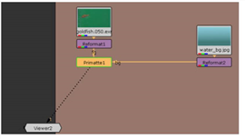
| 3. | 拖动 Bg 连接器来自 Primatte1 到 Reformat2 节点，该节点为此示例提供背景图像。的 Fg 连接器应连接到 Reformat1 . |
| 4. | 将时间滑块移动到帧 50 ,然后单击 自动计算 按钮在里面 Primatte1 控制面板。 |
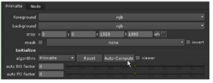
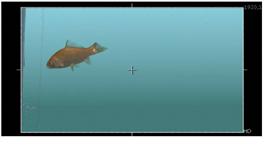
就是这样。你完了.嗯，快完成了。我们需要一条 “自由漂浮” 的金鱼，但是水族馆玻璃上的反射清楚地表明 “圈养”。
垃圾哑光很容易去除反射，你将在后面关于对位的章节中学习如何做到这一点。现在，让我们继续与 Primatte 合作。
正如你所看到的，Primatte 的自动计算选项可以快速地在某些图像上拉键。然而，你也应该知道如何手动拉和调整键。例如，你可能需要对金鱼鳍的透明度进行更多的控制。
| 1。 | 继续前面的示例，打开 Primatte1 控制面板。 |
| 2. | 单击控制面板顶部的 “撤销” 按钮，回到控制面板的上一个状态 Primatte1 节点。或者，您也可以删除当前 Primatte1 节点并插入一个新节点。 |
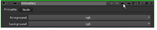
| 3. | 向下滚动 Primatte 选项并设置键控 操作 到 选择 BG 颜色 . |
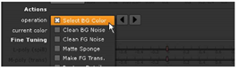
| 4. | 的 当前颜色 芯片应该显示滴管图标。如果没有，点击颜色芯片来切换滴管。 |
| 5. | 按住 Ctrl + 转变 键 (Mac 用户，按住 命令 + 转变 )，并在查看器中显示的图像中拖动或擦洗绿色屏幕的一部分。 |
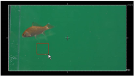
这将返回采样像素的平均颜色拾取。如果您想要从单个像素中选择颜色，请按 Ctrl 或 命令 并在绿色屏幕上单击一次。选择后，您可以通过 Ctrl -或 命令 -再次点击。
| 6. | 新闻 一个 在查看器上切换到 alpha 通道显示。看起来水族馆不像我们想象的那么干净。我们的颜色选择给了我们一个相当嘈杂的钥匙，所以让我们清理一下。 |
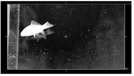
现在，您将对图像的几个区域进行采样，将选定的像素 “推” 到三个区域之一: 透明哑光、不透明主体或哑光的半透明部分。
| 7. | 在 Primatte1 控制面板，更改键控 操作 到 清洁 BG 噪音 . |
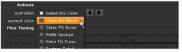
| 8。 | 新闻 Ctrl + 转变 或 命令 + 转变 并在图像右下角的黑暗区域上拖动一个小方块。 |
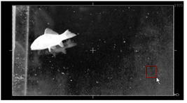
第二个颜色样本通过将选定像素 “推” 到哑光的透明区域来清除背景。你可能需要更多的样本来获得更好的密钥。
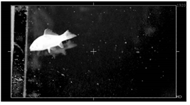
| 9. | 在背景中擦洗一些小区域，聚焦在灰色像素上，直到哑光改善。 |
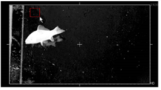
背景不需要纯黑色。我们只是试图在前景主题和绿色屏幕背景之间进行很好的分离。
| 10. | 更改键控 操作 到 清洁 FG 噪音 。这一次，采样金鱼内部的灰色像素区域。 |
一两个小样本应该足够了。颜色拾取将选定像素推送到遮罩的不透明部分。
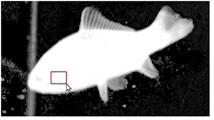
您希望将灰色像素保留在鳍内，以在这些区域保留半透明的哑光。如果你走得太远，你可以随时按下控制面板中的撤销按钮，回到以前的操作。
| 11。 | 新闻 一个 再次在观众切换到所有颜色通道。您的图像应该类似于下面的示例。你可能会看到一些细节从鳍上脱落。 |
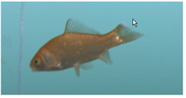
| 12. | 更改键控 操作 到 恢复详细信息 擦洗鳍，带回一些边缘细节。 |
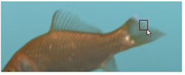
根据从图像中采样的像素值，您可能会得到不同于此处显示的结果。
使用 “还原细节” 将选定像素推回遮罩的不透明部分。使用 使 FG 透明 微调半透明区域的操作。
你可以在清理背景和前景之间来回移动，但这通常会产生带有 “松脆” 边缘的哑光。目标是找到前景和背景之间的平衡，为你的主题产生一个可接受的哑光。
在本章的后面，您将使用对位工具来清理这个哑光，并将其与下一个示例中的图像结合起来。
|
|